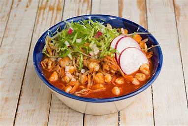
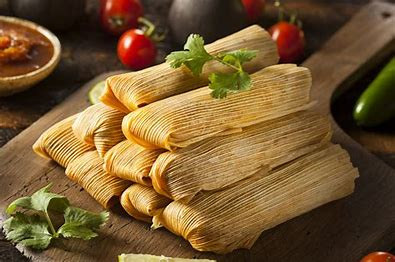
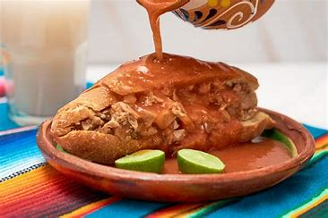
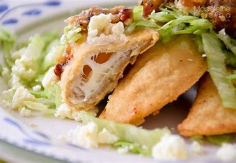
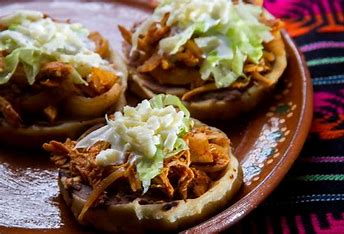
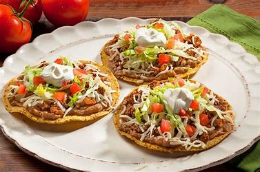
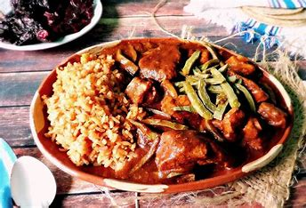
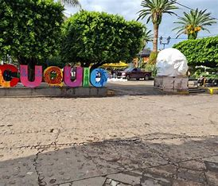

Gastronomía
Cuquío es un municipio rico en tradiciones, cultura y, sobre todo, en gastronomía. Entre todos sus platillos típicos, hay uno que destaca por encima de todos: los tacos. En cada rincón de Cuquío puedes encontrar tacos deliciosos, pero hay una taquería que se ha ganado el corazón (y el paladar) de locales y visitantes: "El Mariscal".
Esta taquería, con muchos años de éxito, no ha dejado de crecer gracias a su inigualable sabor y excelente servicio. Quienes prueban sus tacos quedan fascinados y regresan por más. La rapidez, la atención, y la calidez de su gente hacen de cada visita una experiencia deliciosa.
Porque... tacos, ¿quién no los conoce? Son mucho más que un platillo típico: son una tradición, una identidad, y un símbolo de la riqueza culinaria no solo de Cuquío, sino de todo México.
¿Y en qué consisten los tacos?
Un taco es, en su forma más sencilla, una tortilla (generalmente de maíz) que envuelve un guiso o carne, acompañado de cebolla, cilantro, salsas, y a veces limón, aguacate o nopales. Pero en "El Mariscal", cada taco lleva algo más: el sabor de la tradición y el cariño de su gente.
Mucho Más que Tacos: Un Banquete de Tradiciones
Cuquío no se queda solo con los tacos. Su cocina es un verdadero festín de colores, aromas y sabores, que combina ingredientes ancestrales, recetas heredadas de generación en generación, y una pasión inquebrantable por el buen comer. Cada platillo está cargado de historia, de identidad y de ese sazón casero que no se aprende en ninguna escuela, sino en la cocina de mamá y la olla de la abuela.
Aquí te presentamos algunos de los platillos más representativos que no puedes dejar de probar:
Pozole

Un caldo lleno de alma y sabor. Hecho con maíz cacahuazintle reventado, carne suave (de cerdo o pollo), y acompañado con lechuga fresca, rábanos crujientes, cebolla, orégano, limón y tostadas. Es el platillo por excelencia en fiestas patrias, cumpleaños y reuniones familiares. Una cucharada basta para transportarte a los momentos más cálidos del hogar.
Tamales

Delicados, llenadores y profundamente tradicionales. Envueltos en hojas de maíz, cocidos al vapor, y rellenos con guisos caseros como salsa verde, roja, rajas con queso o hasta mole. También los hay dulces, con pasas, piña o canela. El tamal es símbolo de reunión, de fe y de fiesta. Nadie se come solo uno.
Tortas Ahogadas

Orgullo jalisciense y parte del alma culinaria de Cuquío. Hechas con pan birote salado, rellenas de carnitas y sumergidas en una intensa salsa de jitomate con chile de árbol. Su combinación entre el crujiente del pan y la jugosidad del interior es una explosión de sabor que engancha desde el primer mordisco.
Quesadillas

Un clásico mexicano que en Cuquío también se transforma. Tortillas calientes, de maíz o harina, rellenas de queso que se derrite con el calor, a veces acompañadas con flor de calabaza, champiñones, chicharrón prensado o carne. Doradas o al comal, siempre van con su toque de salsa recién hecha. Sencillas, pero sabrosísimas.
Sopes

Pequeñas delicias hechas a mano, con masa gruesa, frijoles refritos, carne al gusto (como chorizo, carne deshebrada o picadillo), lechuga, crema, queso fresco y salsa. Son humildes en su presentación, pero tienen un sabor que reconforta el alma. Perfectos para un antojito de media tarde o para compartir en familia.
Tostadas

Tortillas fritas y crujientes que sirven como lienzo para una explosión de ingredientes: frijoles, carne deshebrada, lechuga, jitomate, crema, queso, aguacate y la infaltable salsa. Cada quien las prepara a su gusto, pero siempre terminan siendo una obra de arte.
Mole

El rey de las fiestas. Una salsa espesa, profunda y compleja, hecha a base de chiles secos, especias, semillas, frutos secos y un toque de chocolate. Acompaña generalmente a piezas de pollo o guajolote y se sirve con arroz blanco o tortillas recién hechas. El mole no es solo un platillo: es una ceremonia de sabor.
Cuquío se Saborea

Cada platillo de Cuquío cuenta una historia: la de una abuela cocinando con amor, la de un domingo familiar bajo el tejaban, la de una fiesta patronal con música de banda, o una tarde cualquiera en la plaza donde el aroma a tacos, tamales y sopes llena el aire.
Aquí, comer no es solo satisfacer el hambre: es una forma de honrar la vida, la familia, las raíces y las tradiciones. Es sentarse a la mesa y decir sin palabras: "te quiero, te extraño, te recuerdo". Por eso, si visitas Cuquío, ven con hambre… pero también con el corazón abierto. Porque la comida aquí no solo llena el estómago, también alimenta el alma.